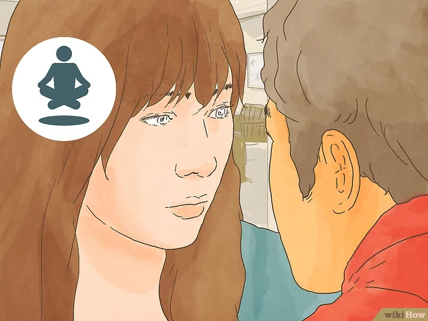
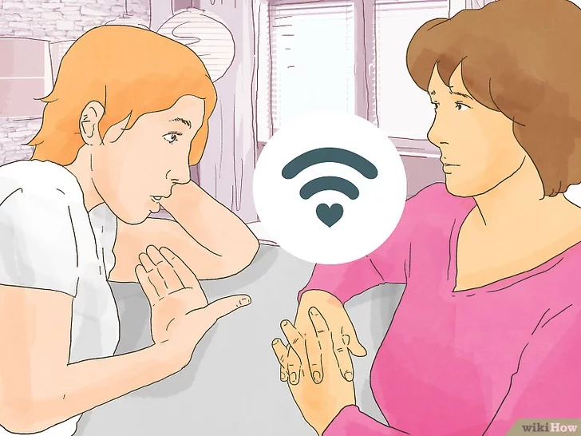

Como Evitar uma Briga
Fugir de uma briga não torna uma pessoa mais fraca ou covarde do que ninguém, apenas prova que ela tem integridade e sabe controlar as próprias emoções. Portanto, quando se encontrar no meio de um conflito com seu parceiro, amigo, pai, ou até mesmo com um desconhecido completo, lembre-se de que se afastar da situação pode ser uma boa ideia. Você vai ficar satisfeito consigo mesmo e com essa decisão se permanecer calmo e souber como se retirar da briga.
Mantendo a calma
1-Controle as emoções. Não exploda e comece a gritar com a outra pessoa — quanto mais irritados ficamos, mais difícil é evitar uma briga. É você quem deve ficar no controle.
- Repita mentalmente alguma frase reconfortante, como “Vou ficar bem” ou “Não vale a pena ficar chateado por isso”.[1]
2-Tome um momento antes de falar qualquer coisa. Pense no que quer dizer e, se sentir vontade de ofender ou atacar o outro, faça algumas respirações profundas com o diafragma ou conte lentamente até dez. Seu objetivo deve ser livrar-se da raiva para poder pensar racionalmente.[2]
3-Demonstre empatia. Leve o ponto de vista do outro em consideração — ter empatia não significa incentivar um certo comportamento, mas sim compreender por que aquela pessoa pode ter pensado ou agido de tal forma. Você terá mais facilidade para deixar a raiva de lado e se afastar da briga se conseguir entender o ponto de vista alheio.[3]
- Por exemplo, caso esteja brigando com um colega que tenha trabalhado muito nos últimos dias para terminar um projeto importante dentro do prazo, reflita sobre como todo o estresse causado por essa situação pode ter influenciado o comportamento dele.
- Caso seu parceiro fique bravo porque você quer sair com os amigos, tente pensar no motivo da raiva em vez de simplesmente acusá-lo de ser irracional. Talvez ele esteja chateado porque se sente abandonado.
Avalie o tamanho da irritação da outra pessoa. Fique atento a indícios visíveis de raiva, como punhos cerrados, ombros tensos e tremedeira.[4] Você precisará determinar o quanto o outro está bravo para poder decidir a melhor forma de aliviar a tensão da situação.
- Uma pessoa visivelmente irritada poderá partir para a agressão física ou verbal se você tentar abandonar a situação, portanto, antes de se retirar, é importante ficar atento a sinais de que o outro esteja perdendo o controle.